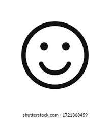

Hi! This is my first project that is going to be shared on Github! So I put a lot of effort into this. I hope you like it!
Sooo, about the series. It is where I explain things that people rarely talk about. And its of course not going to be about your stuffed toys or anything like that. Its about sciency things that I have picked. And this page is targeted for all people. Anyone can read it!:D There will be 4 pages(including this).However, I will be adding one more in the future.
At first, I thought about talking about my coding journey, but I scratched the plan because I did not really have ideas for it. Then, I watched a show called "Explained" on Netflix (here's the link to watch: Explained) and got the idea that instead of explaining common things we are all worrying about, why not about rare things? I do'nt think anyone has ever done this.(Well, at least I think so.) So let's start now!
-Image from shutterstock.com
©Charles Kwan